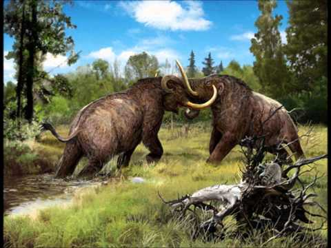

HOW WAS THE NATURE OF COLUMBIAN MAMMOTHS?
hidden
They fought! But how did they fight?
Mammoths most likely fought for similar reasons that their modern-day relatives,the elephants, fight. For example, assuming that their social structure was similar to modern elephants, one might assume that the overall herd structue wasmatriarchal, with mammoth bulls living solitary or group lives following seualmaturity; however, these ideals remain to be speculative. Therefore, reason fofighting between individual mammoths may include competition between bulls ormates, fights between matriarchs and 'strangers' from outside the herd, orsparring between potential matriarchs.
